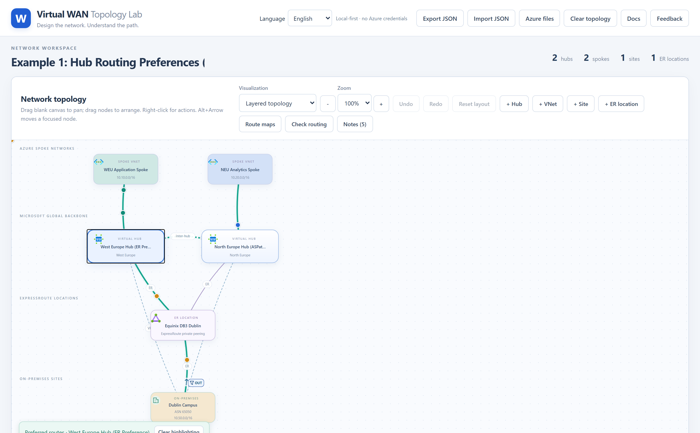
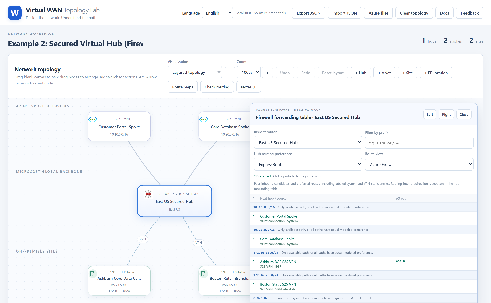
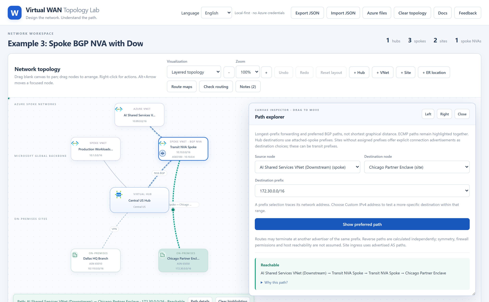
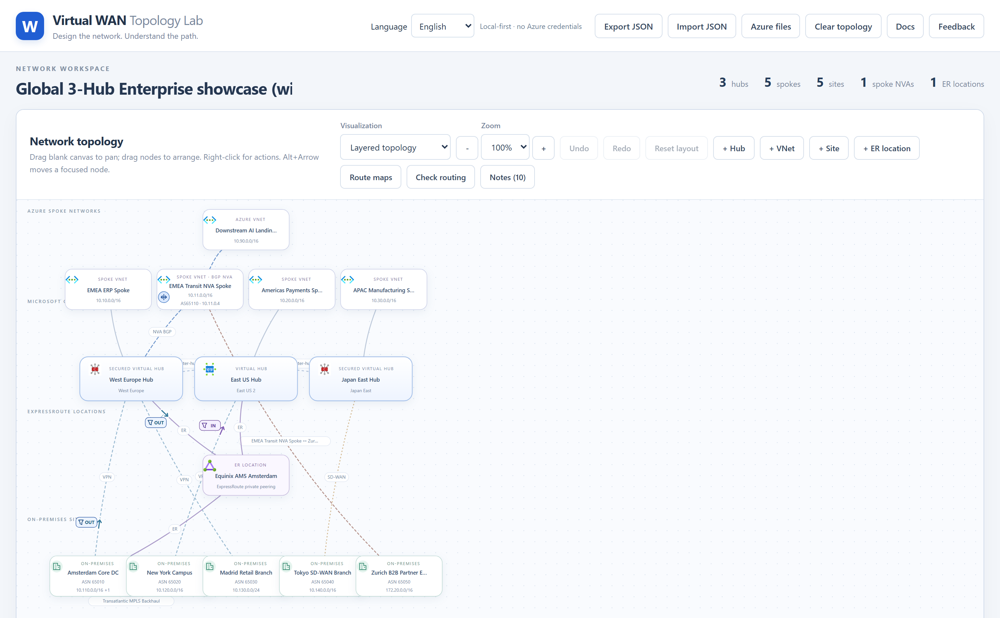
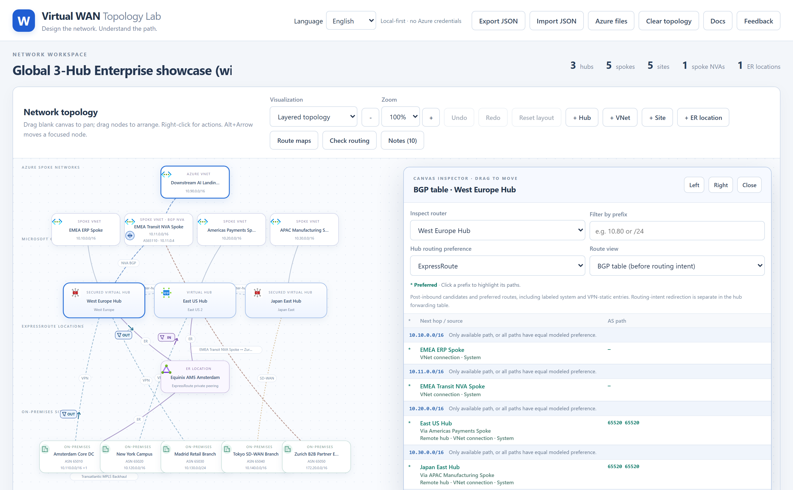
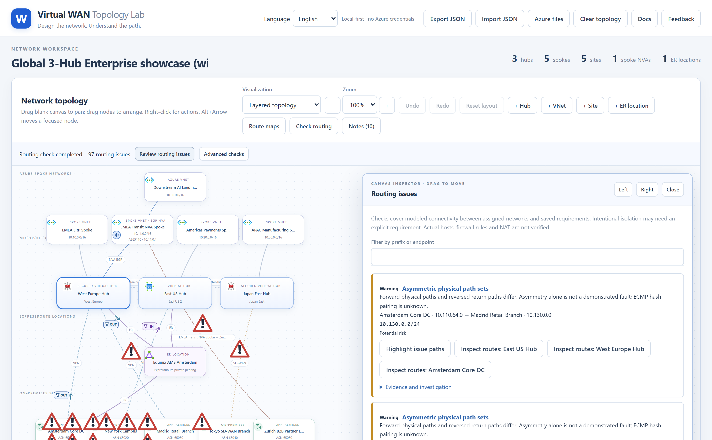
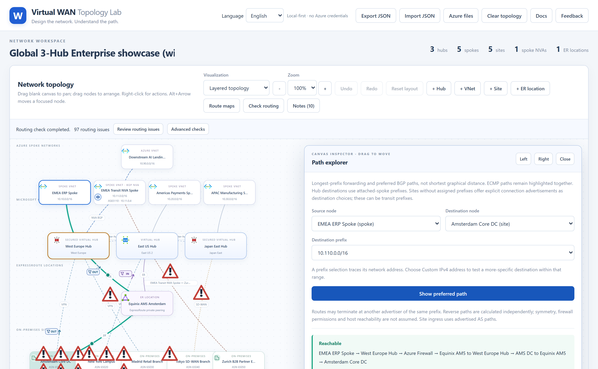
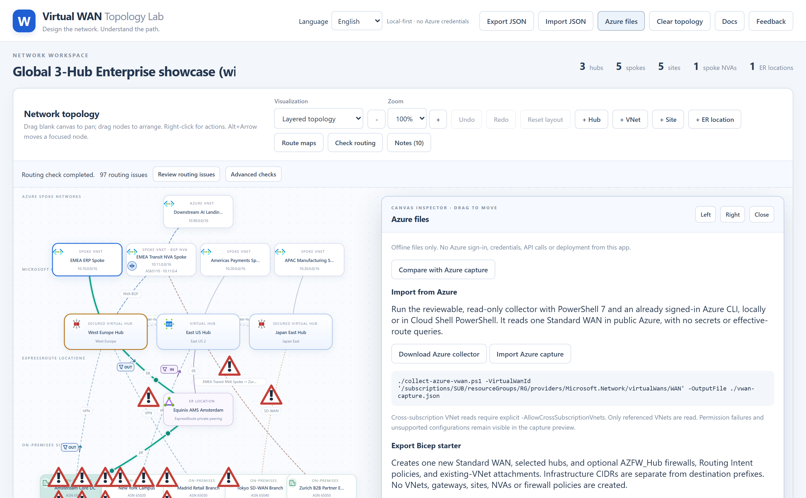

1. Overview & Key Concepts
Virtual WAN Topology Lab (vwan-simulator.com) is a local-first, explainable Azure Virtual WAN routing simulator. Everything runs locally in your browser without requiring Azure credentials.
Hub Routing Preferences
Compare ExpressRoute, VPN, and ASPath hub routing preferences side-by-side and inspect the exact tie-breaker reason on every route.
Secured Hubs & Routing Intent
Model Azure Firewall Private Traffic (RFC1918 or custom CIDR prefixes) and Internet Traffic (0.0.0.0/0) routing intent plus opt-in default-route propagation.
Route Maps & BGP NVAs
Configure inbound/outbound route maps (drop, AS-path prepend, summarize) on hubs and sites, and peer Virtual Hubs with BGP NVAs in spoke VNets.
Automated Routing Diagnostics
Detect forward/reverse path asymmetry, blackholes, firewall bypasses, and single-link dependencies across all prefix pairs with one click.
2. Step-by-Step Instructions
Building or Editing a Topology
- Add nodes from the toolbar: Click
+ Hub,+ VNet,+ Site, or+ ER locationin the workspace toolbar, or right-click blank canvas. - Arrange the canvas: Drag any node to reposition it, drag blank canvas to pan, or switch between Layered topology and Network constellation views.
- Right-click any node or link for context actions:
- Hubs: Edit hub preference (
ExpressRoute,VPN,ASPath), enable Secured Virtual Hub Routing Intent, inspect the BGP table / Learned routes / Advertised routes / Firewall routes, or click Highlight preferred routes. - Spoke VNets: Attach a BGP NVA, attach downstream standalone Azure VNets or downstream on-premises sites behind the NVA, or configure spoke connection route maps.
- On-premises Sites: Connect to hubs via ExpressRoute, VPN (BGP or Static), or SD-WAN; add site-to-site WAN links; or configure site route maps and static routing tables.
- Hubs: Edit hub preference (
- Import or Export JSON: Use
Export JSONin the top bar to save a portable topology file, orImport JSONto load any of the attached sample files below.
3. Sample Topology JSON Files
You can download any sample JSON file below and import it via Import JSON, or click Open in Simulator to launch it directly in your browser:
| Sample Scenario | Demonstrated Features | Download JSON | Interactive Link |
|---|---|---|---|
| 1. Hub Routing Preferences | ExpressRoute vs ASPath hub routing preference with dual ExpressRoute + BGP VPN links |
hub-routing-preferences.json | Open in Simulator → |
| 2. Secured Hub & Routing Intent | Azure Firewall Private & Internet Routing Intent, 0.0.0.0/0 propagation to Spokes & Static S2S VPN |
secured-hub-routing-intent.json | Open in Simulator → |
| 3. Spoke BGP NVA Transit | Spoke VNet BGP NVA peering with hub, downstream standalone VNet, and downstream partner site | spoke-bgp-nva-transit.json | Open in Simulator → |
| 4. 3-Hub Enterprise Showcase (Asymmetric) | 3 Hubs, all preferences, Secured Hubs, ER + BGP/Static VPN + SD-WAN, Spoke NVA, Route Maps, Asymmetric routing | three-hub-all-features-asymmetric.json | Open in Simulator → |
4. Example 1: Hub Routing Preferences (ExpressRoute vs VPN vs ASPath)
In this scenario, Dublin Campus (10.50.0.0/16, ASN 65050) is dual-connected to two Virtual WAN hubs via both an ExpressRoute location (with an outbound route map prepending 65050 65050, making the ExpressRoute AS path 3 hops long) and a BGP S2S VPN connection (1 hop).
- West Europe Hub (ER Preference) prefers the ExpressRoute path to
10.50.0.0/16despite its longer 3-hop AS path because the hub's routing preference is set toExpressRoute. - North Europe Hub (ASPath Preference) prefers the BGP S2S VPN path because its routing preference is set to
ASPathand 1 hop beats 3 hops.

5. Example 2: Secured Virtual Hub & Azure Firewall Routing Intent
This example demonstrates a Secured Virtual Hub (East US Secured Hub) with both Private traffic (10.0.0.0/8, 172.16.0.0/12) and Internet traffic (0.0.0.0/0) Routing Intent enabled:
- All spoke-to-spoke and spoke-to-branch traffic matching the private prefixes is steered through Azure Firewall inside the Secured Hub.
- Boston Retail Branch connects over a Static S2S VPN with
Propagate Default Route (0.0.0.0/0)enabled, learning the Secured Hub's firewall-backed default route.

6. Example 3: Spoke BGP NVA Transit to Downstream VNet & Partner Site
Virtual WAN hubs can peer via BGP with a Network Virtual Appliance (NVA) deployed inside a spoke VNet. In this example:
- Transit NVA Spoke (
10.10.0.0/16) hosts a BGP NVA (10.10.0.4, ASN65100) peered with Central US Hub. - Behind the NVA sits a standalone Azure VNet (AI Shared Services VNet,
10.99.0.0/16) that is peered only to the NVA spoke, plus an on-premises partner site (Chicago Partner Enclave,172.30.0.0/16).

7. Example 4: 3-Hub All-Features Enterprise Showcase (with Asymmetric Routing)
This comprehensive 3-hub topology exercises every capability of the simulator across West Europe Hub (Secured, ExpressRoute preference), East US Hub (VPN preference), and Japan East Hub (Secured, ASPath preference), including an intentional asymmetric routing issue between Azure and Amsterdam Core DC (10.100.0.0/16):
- Forward path (Azure → Amsterdam Core DC):
West Europe Hubhaspreference: "ExpressRoute", so traffic fromEMEA ERP Spoke(10.10.0.0/16) toAmsterdam Core DC(10.100.0.0/16) exits over ExpressRoute viaEquinix AM5 Amsterdam. - Return path (Amsterdam Core DC → Azure): An outbound route map on
West Europe Hub's ExpressRoute link prepends64496 64496to routes advertised over ExpressRoute. Consequently,Amsterdam Core DCsees a 1-hop AS path over its BGP VPN backup link (65515) vs. a 3-hop AS path over ExpressRoute (65515 64496 64496) and sends return traffic back over BGP VPN.

8. Effective Routes, Path Explorer & Automated Routing Diagnostics
Inspecting BGP, Learned, and Advertised Routes
Right-click any Virtual Hub, Site, or ExpressRoute Location and choose BGP table, Learned routes, or Advertised routes. Clicking any prefix row highlights its winning path on the canvas and explains why it won over competing candidates.

Automated Routing Check & Asymmetric Path Detection
Click Check routing in the workspace toolbar to run an automated pairwise reachability and symmetry audit across all owned prefixes. Click Review routing issues to inspect each finding and highlight the forward vs. reverse paths on the canvas.

Interactive Path Explorer
Right-click any node and select Open path explorer (or use Show path to / from) to trace forwarding hop-by-hop between any source and destination prefix, complete with a step-by-step "Why this path?" explanation.

9. Azure Bicep Export & Live Snapshot Comparison
Click Azure files in the top navigation bar to bridge your modelled topology with real Azure environments:
- Export Azure Bicep template (
.bicep): Generate a deployable Bicep template for your Virtual WAN, Virtual Hubs, Secured Hub Firewalls & Routing Intent, VNet Connections, VPN Sites/Gateways, and Route Maps. - Download Read-Only Azure CLI Collector Script (
.sh): Capture an existing Azure Virtual WAN's topology and effective routes into a portable JSON bundle without giving the web app any Azure credentials. - Compare Observed vs. Simulated Routes: Import an Azure capture bundle to compare live Azure effective route tables against the simulator's predicted routes side by side.
